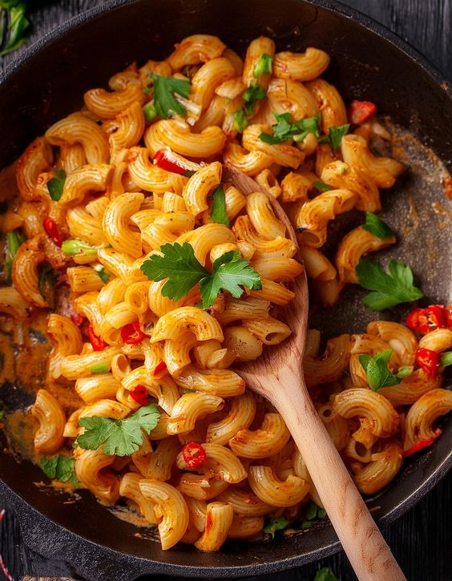

- 1 ½ tbsp Oil
- ½ tsp Cumin seeds
- Prepared Ginger Garlic Paste
- 1 large Onion, roughly slice
- 1 tsp Degi red chili powder
- 1 tsp Coriander powder
- ½ tsp Turmeric powder
- 1 ½ cup Water
- 1 medium size Tomato, roughly chopped
- 1 large Carrot, cut into dice
- ¼ cup fresh Green peas
- ⅓ cup Water
- Salt to taste
- ½ tsp Sugar
- 2 ½ cups Macaroni Pasta
- 1 cup Water
- 2 tbsp Butter, cube
- 150 gms Paneer, cut into cube
- 1 medium size Capsicum, small diced
- ¼ cup Water
- 1 tbsp Tender Coriander stems, finely chopped
- A pinch of garam masala
- ¼ cup Processed cheese, grated
- 1 inch Ginger, peeled, slice
- 2-3 Garlic cloves
- 2 Green chillies
- Salt to taste
- Pizza cheese blend
- Coriander sprig
|
- In a mortar pestle, add ginger, garlic cloves, green chillies, salt to taste and grind into a smooth paste.
- And keep aside for further use.
- In a sauce pot, add oil, once oil gets hot, add cumin and let it splutter.
- Now, add prepared ginger garlic paste and saute for 10 to 15 seconds, add onion and saute well.
- Once onions turn translucent, add degi red chili powder, coriander powder, turmeric powder and saute well.
- Now, add water and mix everything well, add tomato, carrots and mix well and cover it with the lid and let it cook for a while.
- Once carrots cook well, add green peas and water and mix well.
- Add salt to taste, sugar and once again mix well. Now, add macaroni pasta, mix well and add water and mix well.
- Add butter into it and cover it with the lid and let it cook for a while.
- Now, add paneer cubes, capsicum and mix well, add water and mix everything well.
- Cover it with a lid and cook for a while.
- Once carrots, green peas and pasta cook well, add tender coriander stems, pinch of garam masala and mix everything well.
- Add grated cheese and mix well.
- Garnish with pizza blend, coriander sprig and serve hot.
-
|  |
-
👉🏻 Masala Macaroni Madness | Spicy, Tangy & Totally Addictive! 🍝🔥
-
Don't forget to LIKE, COMMENT, SHARE and SUBSCRIBE for more
delicious recipes and cooking tips from The Cooking Royalty.
Discover delicious, easy-to-follow recipes fit for
royalty on
our Cooking Royalty website—where every meal is a
masterpiece!.
Share this deliciousness with friends and family!
|
|